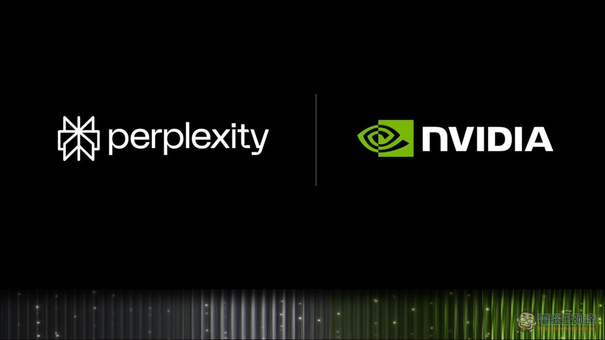

Threads｜Perplexity Portable Computer 登陸 Windows：把 RTX PC 變成本地 AI Agent 工作站

一句話摘要
Perplexity 的 Portable Computer 把「模型 + AI agent + 工具執行 + 排程」搬進 Windows RTX PC：適合想讓文件分析、程式碼整理或例行工作盡量留在自己設備上的人；前提是你得有符合門檻的 GPU，並且仍要清楚管理雲端升級與外部連接器的資料邊界。
來源脈絡
- 分享連結：https://www.threads.com/share/BAWxpaEKdp/
- Threads canonical：https://www.threads.com/@aiposthub/post/DdTFa1egbLH
- 作者：AI郵報（@aiposthub）。
- Threads 於 2026-09-16 擷取；貼文提到 Windows 版已可在 NVIDIA RTX GPU 上執行本機 agent，並以「本機模型推論 0 Token 費用」作為賣點。
- 交叉來源：電腦王阿達於 2026-09-15 發布的產品整理，內容引述 Perplexity 與 NVIDIA 的 Windows 更新資訊；官方網站此時受 Cloudflare 驗證限制，無法直接讀取原始公告全文。
貼文抓到的重點
AI郵報將它描述為「本機 AI Agent 主機」：可以讀本機檔案、整理 Excel／文件、執行多步驟任務與背景排程。後續串文補充 24GB VRAM 為門檻，並舉 RTX 3090、RTX 4090 與 RTX 5090 為例。
這個方向的重點不只是「在電腦上跑一個聊天模型」。Portable Computer 的定位是讓代理所需的模型、任務規劃、工具路由、排程與本地搜尋索引盡量都留在裝置端，方便處理耗時、反覆且包含本地資料的工作。
可交叉確認的規格與能力
依交叉來源整理，目前可確認的 Windows 首波資訊如下：
- 支援搭載 **24GB 以上 VRAM** 的 NVIDIA GeForce RTX 與 RTX PRO GPU；文中列舉 RTX 3090、RTX 4090、RTX 5090，以及 RTX PRO 4500／6000 工作站系列。
- Windows 版可在 Perplexity app 的模型選單下載與選用本地模型；首波提到 NVIDIA RTX 最佳化的 **Qwen 3.8 27B**、以 Qwen 後訓練的 **PPLX 27B**，另有 Nemotron 模型規劃加入。
- 可處理已授權連接的本地與工作資料；文中列舉 Outlook、OneDrive、Word、Google Drive、Gmail、Slack、GitHub，以及透過本地 MCP 伺服器連接其他桌面應用程式。
- 任務若需要網路研究或更強的雲端推理，設計上應先要求使用者同意再上雲；外送步驟與本地檔案直接存取是不同的權限邊界。
- 本機完成的推論不消耗 Perplexity Computer 的雲端點數；這是「不逐 token 計價」的意思，而不是整套系統沒有硬體、電力、訂閱或維運成本。
什麼工作最適合先試
這類本地優先 agent 比較適合先從可控、可驗收的任務開始：
- **本地文件盤點**：從指定資料夾整理檔名、日期、主題與重複檔，但不要一開始就授權整顆硬碟。
- **程式庫工作清單**：彙整已連接 GitHub 專案中的未關閉 PR、過期文件與待追蹤項目，人工確認後再寫入協作工具。
- **帳務或表單初篩**：從明確指定的報表找出異常、重複或缺漏，再由人員複核原始資料與頁碼。
- **排程型例行任務**：例如每日產出一份指定資料夾的變更摘要；先以「只讀、只產生草稿」模式驗證一週，再考慮自動化後續動作。
導入前的四個現實檢查
### 1. 先確認硬體，不要只看「有 RTX」
門檻是 VRAM 容量，不是顯卡品牌或「電競筆電」標籤。24GB 是這次 Windows 支援的起點；GPU 記憶體、系統 RAM、SSD 空間、散熱與長時間負載都會影響可用性。
### 2. 本地模型不等於所有資料永遠離線
本地模型處理與雲端搜尋、雲端推理、Gmail／Slack／GitHub 等連接器是不同資料流。每次開啟 connector、MCP server 或雲端升級前，都應確認權限範圍、傳出的內容與稽核紀錄。
### 3. 「0 Token 費用」不是免費 AI 員工
本機推論能避免逐 token 雲端計費，但仍有 GPU 購置、耗電、應用訂閱、維護與人工覆核成本。長任務尤其應設執行時限、可觀察日誌與停止開關。
### 4. Agent 的自動化範圍要逐步放大
先讓 agent 讀取、分類、提出建議；接著才允許建立草稿；最後才考慮對外傳送、修改檔案或執行交易等不可逆操作。涉及個資、財務、客戶資料與程式碼寫入時，人工核准應保持在流程中。
對 AI 學習雷達的價值
Portable Computer 代表本地 AI 不再只是「下載模型聊天」，而是朝著完整工作流執行環境發展：模型能力、任務編排、工具權限與資料治理必須一起設計。對有 24GB VRAM 級 RTX 工作站的團隊而言，最值得學的不是先追求全自動，而是用一個低風險任務比較三種模式：全本機、必要時雲端升級、全雲端，並記錄成本、品質、速度與資料流向。
原始與交叉來源
- Threads 原始分享：https://www.threads.com/share/BAWxpaEKdp/
- Threads canonical：https://www.threads.com/@aiposthub/post/DdTFa1egbLH
- 交叉整理／產品資訊：https://www.kocpc.com.tw/archives/668994
- Perplexity：https://www.perplexity.ai/
擷取與查核限制
Threads 貼文可讀取主文與串文內容；Perplexity 官方網頁在本次擷取時顯示 Cloudflare 安全驗證，無法直接取得公告內文。因此本文將社群宣傳與交叉來源可支持的規格分開陳述，不把未直接驗證的功能、支援平台或定價視為普遍保證。封面圖保存自交叉來源文章，僅作為本次資訊脈絡的來源證據。